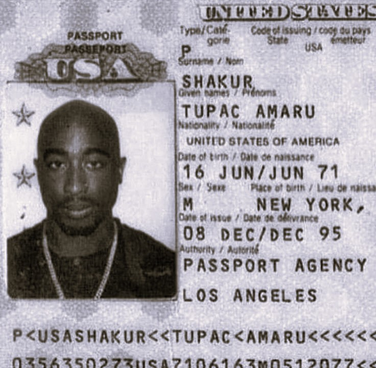
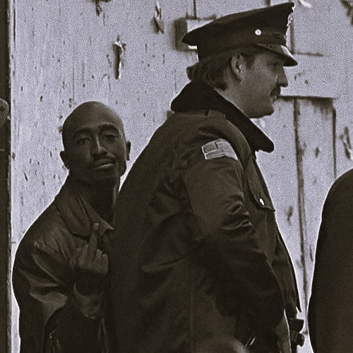
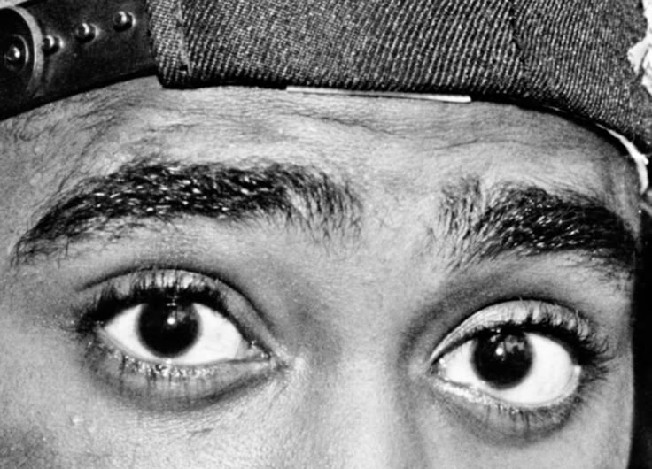
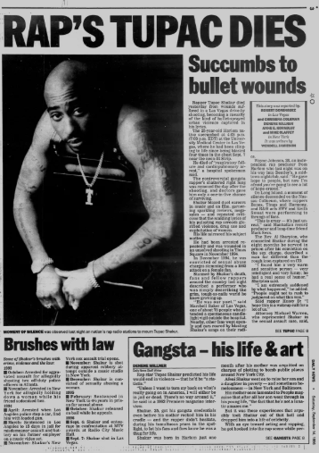

Tupac Amaru Shakur
RAPPER. ATOR. POETA. ATIVISTA. VISIONÁRIO.
Tupac Amaru Shakur, conhecido artisticamente como 2Pac, foi um dos rappers mais influentes da história do hip-hop. Nascido em 16 de junho de 1971, em Nova York, e assassinado em 13 de setembro de 1996, em Las Vegas, Tupac deixou um legado marcado por letras poderosas, críticas sociais e ativismo político. Seus álbuns, como "All Eyez on Me" e "Me Against the World", continuam sendo referência até os dias de hoje.
Além da música, Tupac também atuou em filmes e foi uma voz ativa contra a desigualdade racial, a brutalidade policial e os problemas sociais enfrentados pelos afro-americanos. Sua morte precoce, aos 25 anos, permanece envolta em mistério, mas sua influência atravessa gerações.
Filho de Afeni Shakur, uma ativista dos Panteras Negras, Tupac cresceu cercado por ideais de resistência e luta por justiça. Sua criação foi profundamente marcada por questões sociais e políticas, o que refletiu fortemente em suas músicas.
Mesmo após sua morte, Tupac permanece como um símbolo de rebeldia, consciência negra e criatividade crua. Teorias da conspiração, álbuns póstumos e homenagens continuam mantendo seu nome vivo, consolidando-o como uma lenda imortal do hip-hop.
